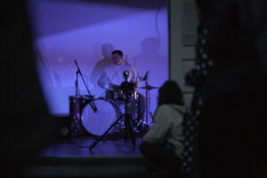
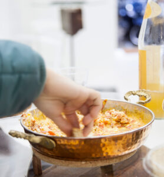
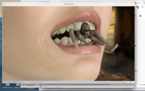
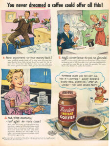
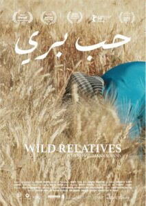
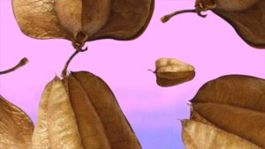

Combining performances, screenings, media installations, discussions and moments of sharing around a dish or a recipe, the festival ‘A Matter of (In)digestions’ brought together artists and thinkers from a wide range of practices. It was hosted by our partners PuntWG, Mediamatic, OCCII, and Filmhuis Cavia, to whom we extend our warmest regards: THANK YOU.
‘A Matter of (In)digestions’ was supported by: the Amsterdam Fonds voor de Kunst, the Prins Bernhard Cultuurfonds and the French Institute in the Netherlands.
La Cocina began with a simple question in mind: ‘What is a kitchen?’, which we quickly broadened to ask ourselves: What surrounds a kitchen? What do our appetites tell us about taste and infrastructure, crops and identity, recipes, and Botanics? Indeed, when we prepare and eat food we don’t only combine and ingest solids and liquids, but symbols, protocols, values, and centuries of history that come together in a single bite.
With the festival ‘A Matter of (In)digestions’, we want to call attention to what we tend to take for granted – that is, what we consume –, and highlight some of the socio-political, historical and cultural intersections that consumption implies. In this context, consumption goes far beyond the contemporary notion of consumerism, which mainly refers to an economic system and a way of life rooted in a logic of uninhibited growth and the promise of material fulfillment. Rather, consumption is understood as a fundamental activity that defines the life of humans and non-humans, revealing their symbiotic relations. It is an exchange that involves a reciprocal transaction, which affects both the consumer and what is consumed – whether edible or cultural –, thus blurring the frontiers between the entities involved.
In our exploration of consumption, the notion of indigestion serves as a figure of speech suggesting a metabolic impromptu or creative slip. When a process is disrupted, something else happens. Potentialities that might have gone unnoticed come to light: a spark of poetry is ignited, an addiction revealed, new insights are gained. Think, for example, of the findings of Alexander Fleming or the way in which sugar, extracted from the colonies and forced into households, provided the energy that indirectly fueled the industrial revolution and the subsequent obesity pandemic: a total (in)digestion.






With:
Ivan Cheng, Magali Daniaux & Cédric Pigot, Toon Fibbe & Laura Wiedijk, Tina Harris, Suzan Kalle & Suat Öğüt, Alexandra Laudo with Sam Kingue Ebelle, Florence Lazar, Jumana Manna, Céline Mathieu, Maxim Tyminko, Klasien van de Zandschulp